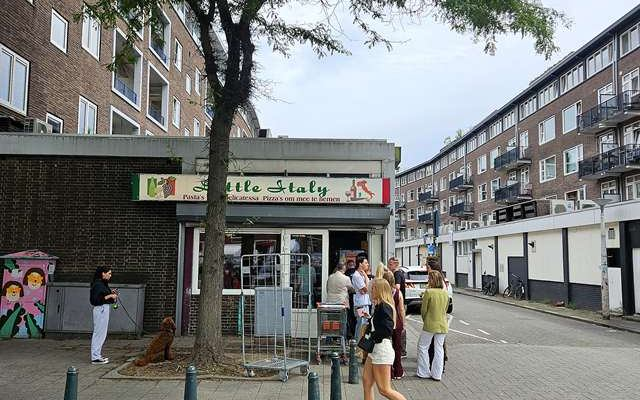

Little Italy — puur Italië tussen de parkeergarage en de Meent
Van buiten loop je er zo voorbij. Van binnen: verse broodjes, plaatpizza en het ultieme vakantiegevoel. Rotterdammers weten het al lang — de rij begint om 11.45 uur.
Lees het verhaal →